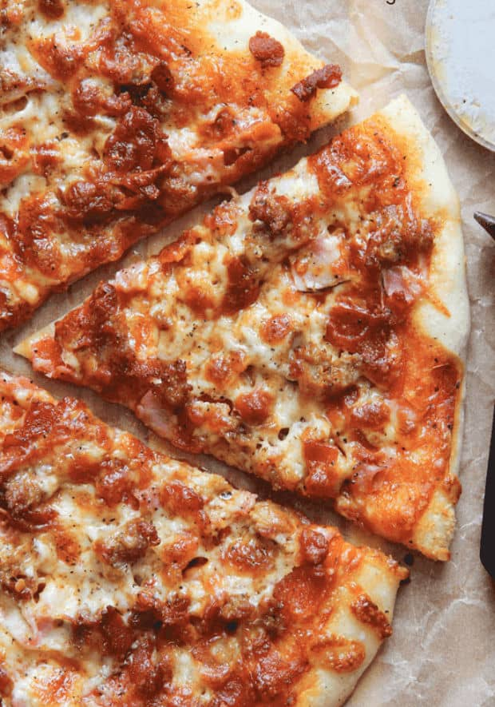

Homemade Meat Pizza
This pizza is from my childhood, passed down from generation to generation in my family. The first time i ever had this pizza was with my grandparents and my grandad made the pizza. The first taste felt like heaven was in my mouth, the crust was super crunchy like you're eating pretzels, the sauce is sweet and creamy and makes you want to explode after tasting it, and the meat is fresh from the deli making it the juciest meat out there. Enjoy the pizza!

Ingredents:
- half cup of water
- 1/2 tsp active dry yeast
- 1/4 tsp granulated sugar
- 1 1/4 cup all purpose flower
- 3/4 tsp salt
- 1 tbsp olive oil
- 1/2 cup pizza sauce
- 1 1/2 cup mozzarella
- 3 tbsp parmesan cheese
- 4 slices bacon
- 1/2 cup hot sausage
- 1/4 cup pepperoni slices
- ground black pepper
Instructions:
- Prepare dough by combining warm water, heated to 115°F, with yeast and sugar. Stir to dissolve and allow to proof.
- In the bowl of a stand mixer, add flour and salt. With mixer running on low, slowly add yeast mixture. Increase speed, adding olive oil, if needed or desired. Mix until a ball forms, pulling away from the sides of the bowl. Transfer to a greased bowl. Cover and allow to rise in a warm location until doubled, roughly 1 hour.
- Meanwhile, cook bacon and sausage. Chop bacon and ham. Crumble sausage.
- Preheat oven to 425°F.
- Grease a baking sheet with olive oil. Shape dough to desired size. Spoon pizza sauce over dough. Sprinkle with Parmesan
cheese and 1/2 cup shredded whole milk mozzarella. Add meat toppings. Finally sprinkle with remaining 1 cup mozzarella
and ground black pepper.
- Bake for 15-20 minutes or until desired crispness is reached. Serve warm.